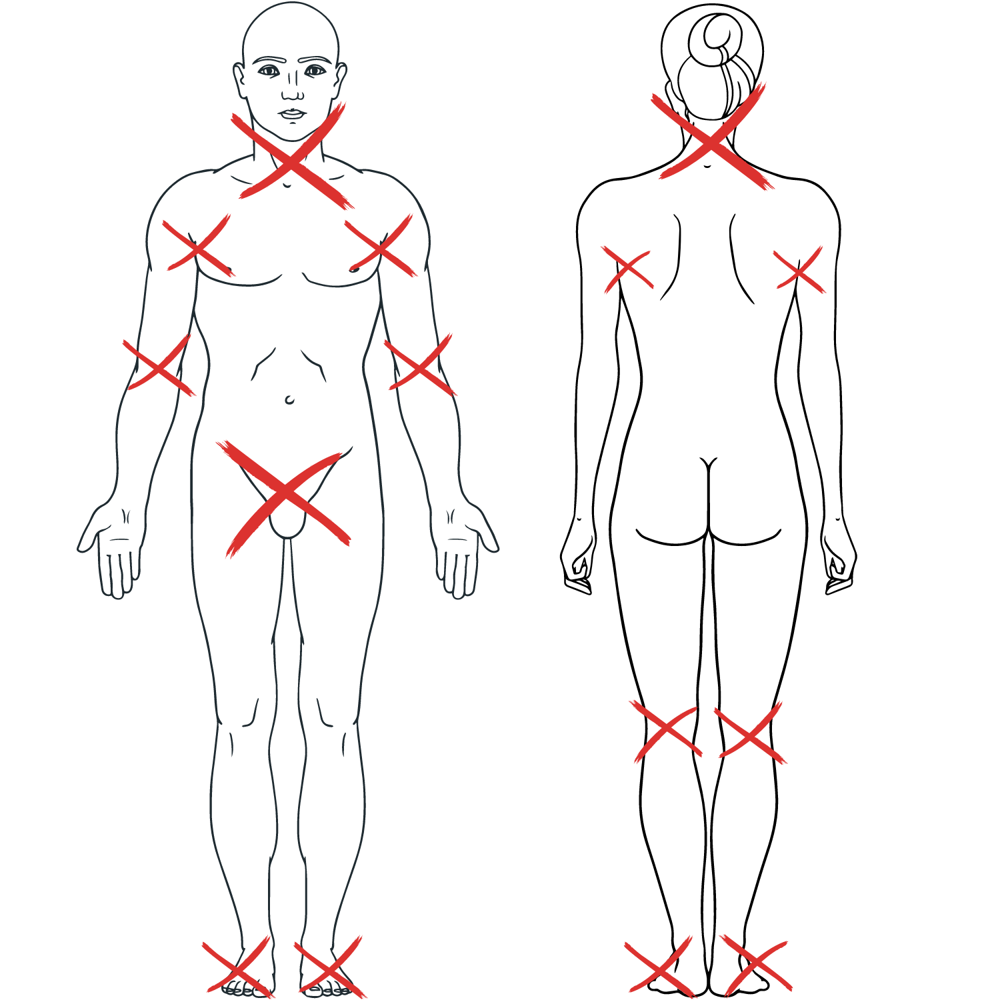

Rules for The New Era
International Profight League
§1 General Assumptions
1. Fights are
based on historical tournaments. Combatants are protected by equipment based on
historical armors and with the use of corresponding weapons from time
1350-1550.
2. Fights may be
held in two types:
- contracted
fights as a form of fight between two fighters;
- tournament as a
form of competition between multiple fighters.
3. Fights are
held in different categories based on the weight of participants.
3.1 For men:
- less than 75 kg
- 75 kg up to 85
kg
- 85 kg up to 95
kg
- over 95 kg
3.2 For women:
- less than 60 kg
- 60-70 kg
- 70-80 kg
- over 80 kg
3.3 Open category
– for both (men and women) if both participants agree there may be a difference
in the weight of fighters not based on the previously mentioned weight range.
3.4 The weighing
should be done before fights to dived combatants into the proper category.
4. There are 3
levels of the profight:
- Junior Card
- Base Card
- Main Card
5. Fighters
should be over 18 years old and have no medical conditions to participate in
the fight.
6. Every
participant should have a complete set of offensive and defensive equipment and
clothes. All elements should fulfill requirements for a sufficient level of
protection, historical accuracy, and aesthetic appearance.
7. Each
competition should have professional medical support provided by the organizer
of the event. In case of injury members of the medical support team may decide
to withdraw an injured fighter from further competition.
8. It is allowed
to use commands in the language of a country in which fighters take place if
both fighters and marshals are from this country or understand it.
§ 2 Marshals Committee
1. Marshals
Committee should consist of:
- Head
Marshal/Field Marshal
- Three or more
Side Marshals
- One Timekeeper
- One Secretary
- One Technical
Marshal
2. It's allowed
to combine the duties of marshals. The duties of the timekeeper may be combined
with the secretary and technical marshal with any other duties (head marshal,
side marshal, etc.).
3. The Head
Marshal/Field Marshal:
- is responsible
for the work of the Marshals Committee during the competition;
- after each
round of the fight gives additional point to the fighter, who (in their
opinion) was dominating during the round;
- in case
protests submitted by fighters takes a lead in their consideration by the
Marshal Committee;
- has a casting
vote in the interpretation of the rules and all matters related to
consideration of the protests;
- they are
responsible for checking the readiness of fighters, marshals, and timekeeper;
- give the
command to start, suspend and stop the fight;
- is obligated to
control the course of the fight counting time of clinches, knockdown recovery,
knockouts, reactions to breakages of armor and weapon, losses of weapon, and
appearance of unauthorized techniques;
- has the right
to give oral warnings, yellow and red card (disqualification), and dismissal of
the cornerman;
- is obligated to
check out the condition of the field between rounds of fights;
- is responsible
for announcing the winner according to the result of points counted by Side
Marshals.
4. Side Marshal's
duties:
- objective
counting of all actions made by both fighters. Based on this Side Marshal
evaluates the points acquired by each fighter in the round of the fight;
- count
additional points for each loss of weapon, or breakage of equipment;
- Side Marshals
should keep points independently. They are not allowed to contact other Side
Marshal during the round. Side Marshals should be located on different sides of
the list;
5. The timekeeper
counts down the time of each round of the fight. It is within their duties also
count a rest time between the rounds, and time allotted for
repairment/replacement of broken equipment. They announce the end of the round
and the end of the rest between rounds with the command „Time” and the sound of
a gong or similar device.
6. The Secretary
– counts the results of each round of fight based on points given by Side
Marshals.
- is obligated to
make notes in the fight protocol. All yellow and red cards should be marked in
the protocol for further calculations;
- is obligated to
take notes if any medical conditions may not allow the fighter to continue
fighting.
- In case when
there's no announcer/Herald of the event, is obligated to call fighters to
enter the field according to the fights plan.
7. Technical
Marshal's duties:
- checking the
safety of the offensive and defensive equipment of each fighter.
- is obligated to
inspect the general appearance and historical accuracy of armor and weapon.
- have rights to
the demand of replacement of a selected element of equipment if they do not
meet requirements of safety, appearance, or historical accuracy
- make a brief
check of equipment before the start of each fight and in case of demand from
one of the fighters also inspect after the fight.
§ 3 Requirements for the lists
1. The side of a
rectangular list should be at least 7,5 meters and no more than 10 meters long.
2. The fence of
the list should be between 1,2 to 1,5 m in height. It should prevent fighters
from coming out of the limits. It should be visible. It's recommended to make a
clear and visible mark for starting corners for each fighter. It's recommended
to place a white towel in the fighter's corners (in case of need to signalize
„stop the fight” by cornermen).
3. The boundaries
of the lists should be properly seated on the ground in a way that does not
allow them to move during the course of the fight.
4. The surface of
lists should be dense and plain and prevent fighters from slipping.
5. The light
source should be located above the list on the height that prevents fighters
from being blinded by it.
6. It is
recommended to make around the list the safe zone of optimal 1,5 m (but no less
than
1 m widths). The
boundaries of the safety zone should be clearly marked with poles and strings.
§ 4 General commands
I Commands
reserved for Field Marshal:
1. Fight –
initialize fight at the beginning of the round or after any suspension of the
fight ( see below).
2. Stop fight –
stops the fight for any reason (see below).
3. Breakdown of
weapon/armor – to announce breakdown of part of the equipment.
4. Loss of weapon
– when one of the fighters loses his weapon.
5. Knockdown –
when one of the fighters is recognized as knocked down.
II Command to
announce the flow of time
During the fight
– “Time” - to announce the end of round and end of break between the rounds. It
also should be used if there was a breakdown of equipment, and the fighter has
been granted time to repair it.
§ 5 Fight procedures
According to the
chosen condition, there are three main fighting durations of the fights:
– for Junior Card
- 1,5 minute (90 seconds) with a break of 45 seconds
– for Base Card -
2 minutes (120 seconds) rounds with a break of 1 minute (60 seconds)
– for Main Card -
3 minutes (180 seconds) rounds with 1,5 minute (90
seconds) break.
Each fight
consists of 3 main rounds with time allotted according to the above
possibilities.
§ 6 Fighters
1. All
participants are obligated to know the rules and regulations and strictly obey
them.
2. The fighter
must obey commands given by the Head/Field Marshal.
3. Should be
polite to other participants, marshals, and spectators.
4. Swearing,
rudeness, and other impolite actions may be penalized by Field Marshall with an
oral warning, yellow card, or even disqualification if they are persistent.
5. In the case
above actions take place outside the list Head Marshall may demand to penalize
them by the event organizer and/or League.
6. Is obligated
to use a set of armor, weapon, and clothes that fulfill requirements.
7. The fighter
must come to the field straight after he/she has been called by the
Herald/Secretary/announcer of the event.
8. Must have a
set of spare weapons and elements of armor, along with the necessary repair kit
that allows making urgent repairs.
9. Each fighter
should have at least one cornerman. There's a maximum limit of two cornermen
for a fighter.
10. A fighter may
demand to stop the fight. This demand can only be made in the following
situations:
– fighter
recognizes wishes to yield;
– is unable to
continue the fight caused by damaged armor/weapon;
– is unable to
continue the fight from medical cause (e.g., injury);
– a signal to
stop the fight should be given to the Field Marshal. It may be done by throwing
a weapon to the surface of the list or shouting “Stop fight”;
– fighter may
demand to inspect the equipment of both fighters after the fight;
– they may submit
the protest to the Marshal Committee against actions taken by the opponent or
any Mashal, that in his opinion contradicts the rules.
§ 7 Cornerman
1. Is obligated
to know the rules and regulations and strictly obey them.
2. Is obligated
to follow commands of the Field Marshal/Head Marshal.
3. He is
attending his fighter to the limits of the field and aids him in preparations
before the fight.
4. During the
fight must be ready to make repairments/exchanges of damaged equipment or
weapon according to Field Marshal's demands.
5. During the
fight, the cornerman stays outside of the list. He may enter the list in time
between the rounds or for the demand of the Field Marshal to aid the fighter in
repairing/exchanging damaged equipment.
6. Should be
polite to other participants, marshals, and spectators. If he is not following
this rule, he may be dismissed from the field/safe zone by the Field Marshal. Thus he may give coaching advice to his fighter, encouraging
him by a shout. He should not interfere with the work of the marshals.
7. Cornerman has
the right to demand to stop the fight. He may do this in the following cases:
– recognizes and
accepts the defeat of his fighter;
– his fighter is
unable to continue fighting caused of breakdown or loss of the element of his equipment;
– his fighter is
unable to continue the fight due to injury or other medical causes.
Cornerman should
signalize the above demand by throwing a white towel onto the surface of the
list.
8. The cornerman
has the right to submit a protest in the name of his fighter (if he cannot do
this by himself) against any actions taken by the opponent or any marshal, that
in his opinion contradicts the rules.
§ 8 Technical requirements for combat equipment
I Weapon:
1. It is allowed
to use the following weapons:
- one-handed
bladed weapon, mace, axe
- it's allowed to
combine any one-handed weapon mentioned above with a shield. It's also allowed
to use two one-handed weapons (wielded in both hands).
- two-handed
weapon
2. Weapons should
be well balanced, without rust, and any notches should be smoothed out. There
must be no sharp edges. It should be based on historical weapons for the given
period. It is recommended for one-handed bladed weapons weight should be no
less than 1200g and the point of balance at a minimum
of 15 cm from the crossguard.
II Armour
1. Armour should provide complete, reliable protection of the
whole body of the fighter (head, neck, limbs with all joints including feet,
corpus, pelvis). It's necessary to have groin protection. There should be no
gaps between elements of armor that are not protected. It also should be based
on historical armors dated from 1350-1550.
2. The protection
should consist of two layers:
– outer layer -
titanium or steel layer with a recommended thickness of no less than 1 mm or
hardened leather with thickness no less than 5 mm or a combination of these
options.
- inner layer –
shock absorbing soft layer (quilted clothes, felt lined with fabric). The
thickness of this layer should be no less than 2 mm after compressing. In
places like elbow pit, arm pit, and knee pit this may be thicker.
3. The helmet
must be made of steel with a minimum thickness of 2 mm. Under the helm, there
should be a shock-absorbing soft layer with minimal thickness at the
compression of 4 mm. A helmet should provide complete protection of the head
and neck. It's necessary to use additional protection for the neck (gorget made of plate, scale, or ring) for helmets that do
not protect the neck.
4. It is
recommended to have a helmet fastened with a chin strap, a strap on the back,
or even both options. It may also be fastened by straps connected to the armor
and aventail. It has to prevent the helmet to be taken
off the head.
5. In the line of
the cervical spine, it's necessary to have additional protection made of
titanium/steel with a thickness of no less than 1 mm.
6. It is allowed
to change elements of his equipment (parts of armor or weapon) during the
interval between rounds or during a round in case of breakdown of armor or
weapon. The elements of equipment should be supervised by the Technical
Marshal.
7. The Head
Marshal and Technical Marshal may demand to change any element of armor or
weapon if it does not fulfill requirements of safety, aesthetic or historical
accuracy.
§ 9 The permitted actions
1. During the
fight, it is allowed to attack the opponent with any part of a weapon, shield,
arms (fists, elbows, forearms), legs (feet, shins, knees), and head with
exception of the actions mentioned in Prohibited Actions.
2. Strikes may be
delivered to any area that is not mentioned as a forbidden hitting zone.
3. It's allowed
to use wrestling techniques with limits written down in Prohibited Actions.
§ 10 The prohibited actions in the fight
1. Stabbing blows
with any part of the weapon. Also, threats of the stab are forbidden.
2. Any kicks to
the knee.
3. Strikes the
opponent who lost his weapon.
4. Any joint lock
techniques and chokeholds.
5. Any blows to
the head from behind that go in the direct line of the spine.
6. Any actions
aimed at the neck.
7. Intentional
pushing or throwing an opponent out of the list.
8. Grabbing the
fence and resting with hands above the fence.
9. A fighter
can't protect himself while lying on the back with the use of his feet.
10. Any attacks
aimed at a lying opponent with a foot or shin.
11. Kicking an
opponent with a knee aimed at the head.
12. Attacks that
may penetrate the eye slits of the opponent's helmet.
13. Grabs of the
edges or straps of opponent equipment. Also grabbing the opponent's weapon with
hands is not allowed.
14. Any attacks
before the start of the fight, after the end of the fight, or during the
suspension of the fight.
Other prohibited
actions:
1. Intentional
leaving of the lists after command „Start fight” and before the announcement of
the results of the fight. Exemption – permission is given by Field Marshal.
2. The fighter
has no right to use any part of the equipment or any weapon that hasn't been
allowed by the Technical Marshall.
3. It's not
allowed for the fighter to be under influence of alcohol or/and any psychoactive
substances.
4. Intentional
being passive in a fight for more than 10 seconds.
5. Any actions
made by a fighter or his cornerman which may seriously affect the course of the
fight.
Forbidden Hitting
Zones:
1. The nape and
front part of the neck
2. Armpits, elbow
pits, knee pits.
3. Groin and
crotch.
4. Feet and
ankle.
5. Any part of
the opponent's body that lost protection.

§ 11 Penalties
In case of the
appearance of prohibited action Field Marshal may use one of the penalties
below.
- an oral warning
(to the fighter or cornerman);
- yellow card –
an official reprimand;
- an expel of the
cornerman;
- red card –
disqualification of the fighter.
1. An oral
warning should be taken if a cornerman or fighter violates the rules, but it
doesn't make a significant influence on the course of the fight. It doesn't
have to be recorded in the protocol. It has a role to alert that more serious
actions can be made if the violation will be repeated.
2. Yellow card –
the fighter or his cornerman is systematically repeating the violation or their
actions have affected the course of the fight seriously. This penalty should be
recorded in the protocol and is taken into consideration in the final score of
the fight. Yellow card must be accompanied by the command „Yellow card” and
pointing with the hand directed to the fighter made by Field Marshal.
3. Expulsion of
the cornerman – Decision is taken by Field Marshall if he is violating rules and this has an impact on the course of the fight or
if they are repeatable. This decision should be noted in Protocole but it doesn't have an impact on the score
of the fight. In case when a fighter has only one cornerman, another person
should be appointed by the fighter immediately to take this position.
4. Red card – Red
card is equal to disqualification. This card will be given to the fighter who
already got 3 yellow cards (the third yellow card automatically means a red
card). It may also be given if actions made by the fighter or his cornerman
disrupted the course of the fight in such conditions that don't allow to
continue or properly start the fight. If a red card has been given it has to be
noted in the protocol. The Marshall should point his hand in the direction of
the fighter and announce, “Red card” or “Disqualification”.
§ 12 Special situations during the fight
1. A loss of
weapon – in this case fight must be stopped. Field Marshal should announce
„Loss of weapon” and point hand in the direction of the fighter. After taking
back the weapon, the fight must continue. Side Marshals should grant the
opponent 3 points.
2. A breakdown of
weapon – in this case Field Marshal should stop the fight. The fighter must
replace the weapon with a new one, which was accepted by the Technical Marshall
during preparations to fight. If replacement is impossible (the fighter does
not have a spare weapon) fight must be stopped and victory will be given to the
opponent. If the replacement is done the fight will be continued.
3. A breakdown of
the armor – The Field Marshal must stop the fight and point to the fighter with
the issue announcing “Breakdown of armor”. The fighter
has 90 seconds to fix it with the help of a cornerman. The opponent is granted
3 points. If a fighter couldn't repair/change a broken part then he may be
granted another 90 seconds, and the opponent gets additional 3 points. If after
that time the fighter is unable to continue the fight – the victory is given to
the opponent.
4. A clinch –
it's the situation of stance between fighters during the fight. If it occurs
for 10 seconds, then the Field Marshal should stop the fight with the command
„Break”. Both fighters should separate from each other and after the command
„Fight” given by the Field Marshal continue the fight.
5. In case one or
both fighters unintentionally fall outside of the list fight should be stopped
by the Field Marshal. Fighters should take place in the list and then the fight
may be continued.
6. A fall is a
situation when a fighter touches the ground with three points of the body, his
back, and buttocks. In the state of fall, there may be one or both fighters.
Field Marshall should stop the fight after 10 seconds of fall (command used for
this situation - „Break”). Both fighters should then take standing positions at
a distance of about 3 meters and wait for the Field
Marshal for the command to resume the fight. In case that fall was a result of
actions aimed at overthrowing an opponent, the fighter who gets control (is at
the top) may attack the fallen one. All clear hits made by him with weapon,
shield, fists, and elbows should be counted for 2 points. A fallen fighter may
take any actions to protect himself (excluding those noted in the prohibited
actions).
7. A knockdown's
a situation in which a fighter temporarily loses the ability to fight. It may
not be accompanied by loss of consciousness and falling. The Field Marshal has to be aware of such situations and when it occurs, he
should stop the fight and start to count down to ten. He also should visualize
this by counting with his hand in front of the face of the knocked fighter. In
case that after counting to ten the fighter didn't regain the ability to fight
then the fight should be stopped and he will be
recognized as knocked out. The victory should be granted to the opponent. If
before the end of counting fighters signalize readiness to continue the fight,
then it should be resumed. The knocked-out fighter should be checked by medical
support.
8. A knockout –
it's a situation when in the course of the fight one
of the fighters loses the ability to fight. The recognition of this state lies
in the competencies of the Field Marshal. He will announce „Knock out” and
point his hand in the direction of a fighter. The victory goes to the opponent.
The knocked-out fighter should be checked by medical support.
§ 13 Calculating the points
Hits must be
clear, strong, and well placed to the permitted hitting zones (if not mentioned
in other restrictions below).
1.. Every hit
with cutting edge of weapon – 1 point
if especially
strong – 2 points
2. Every kick
made by foot, knee, or shin (except to the prohibited areas) – 1 point
- if especially
effective – 2 points
3. Every hit with
a fist, elbow, pommel, a shaft of a weapon, shield to the head or a trunk
(chest, abdomen, back) 1 point
- if especially
strong 2 points.
4. Every hit with
the head – 1 point,
- if especially
effective – 2 points.
5. Any actions
that will cause the fall of the opponent – 3 points. Hits made to the fallen
opponent are counted as 2 points for each.
6. Knockdown of
an opponent – 5 points.
7. Loss of the
weapon – 3 points to the opponent.
8. Breaking of
armor – 3 points to the opponent if fixed in 90 seconds, 6 points if in 180
seconds.
Points are
counted by Side Marshalls for both fighters at the same time. After the end of
each round marshals are giving scores to the Secretary, who puts them into the
protocol. The fighter gains one Round Point for winning the round (for each
Side Marshal) and then an additional point from Field Marshal is granted (a
point is given to the fighter who, in the Field Marshal's opinion, was more
aggressive and dominated the round). The fighter with more Round Points wins
the round. There are 3 rounds. The fighter who wins more rounds wins the fight.
In case there is a draw, the winner is chosen by marshals based on their
opinion of who was more dominant in the whole fight.
§ 14 Protest procedure
If a fighter, or
his cornerman (if the fighter is unable to make it by himself) doesn't agree
with any actions during the fight, and in his opinion, there was a violation of
rules, then he may submit a protest in the written form. This should be made
within 15 minutes after the end of the fight which is a point of contention.
Written protest should be submitted to the Head Marshal. He has
to decide if the protest is rational. Head Marshal takes this decision
after talking with both sides of the fight and
He may consult
with Marshals Committee. If the protest was reasonable then one of the
following options may be chosen:
- Revision of
fight based on the recorded film (if it is available).
- Repeating of
one round or all fight.
If a protest was
submitted and was referred to any marshal (including the Head/Field Marshal)
then the organizer of the event should be involved in making the decision.